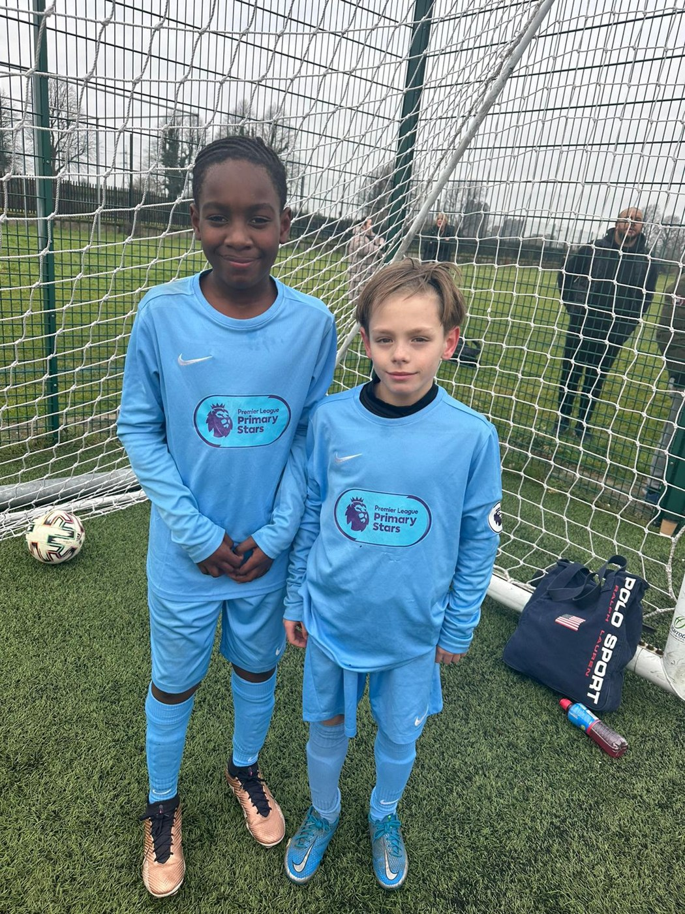
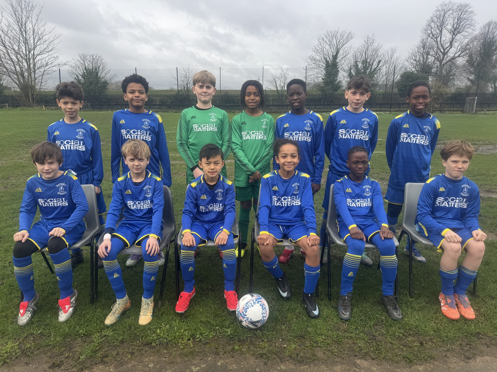
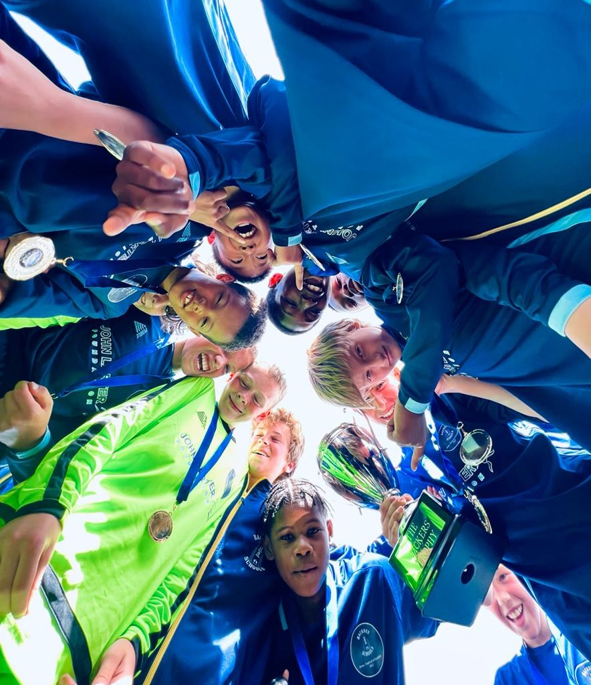
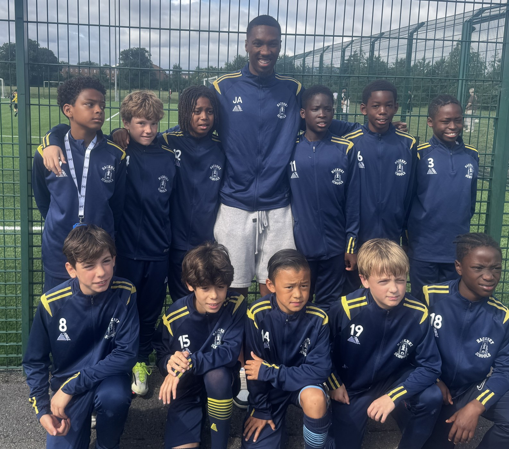
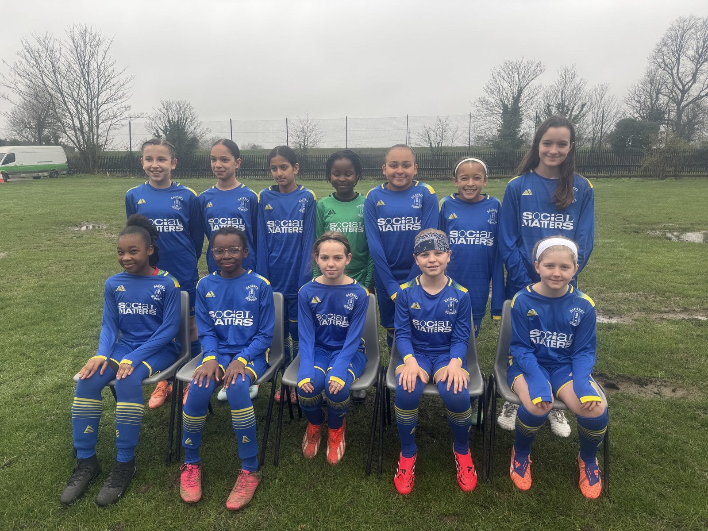
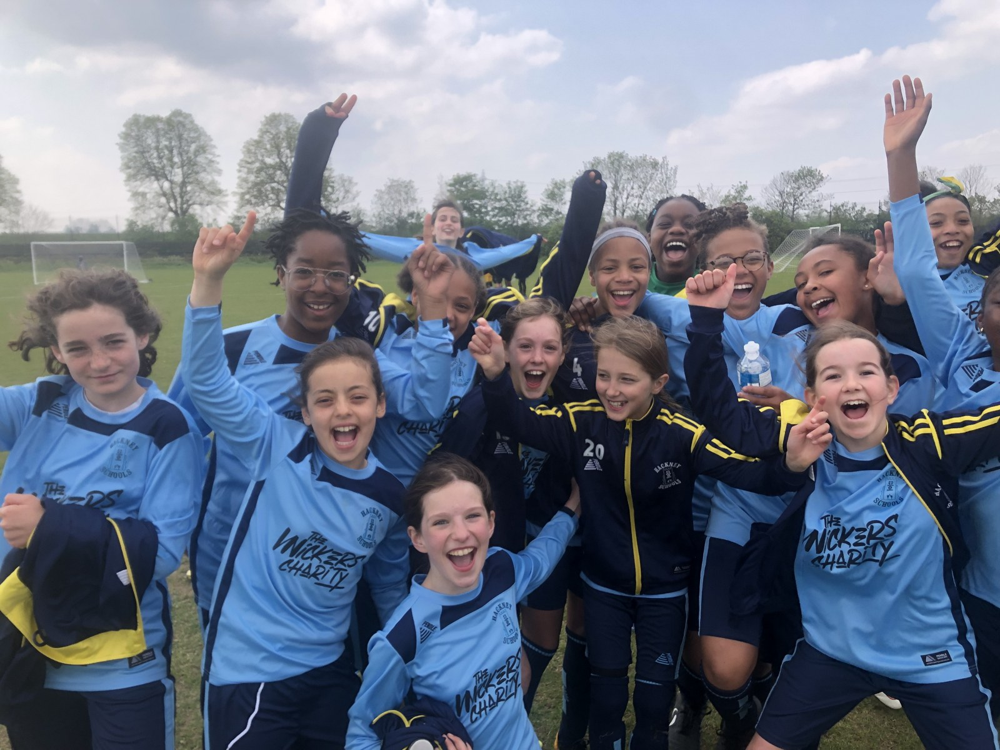

HSAA delivers football competitions for Hackney primary schools and oversees the borough’s boys’ and girls’ district teams.
Schools Football
School competitions, cup histories and affiliation for Hackney primary schools.

Football in Hackney primary schools
Association football is traditionally Hackney primary schools’ strongest sport in terms of participation and matches played. There are locally organised competitions for boys and girls. Originally played as eleven-a-side, school football has developed into five-, six-, seven- and nine-a-side formats for under-11 children.
School football has been organised by the association since 1891. Hackney schools have competed strongly among London boroughs and at national competitions and festivals.
Many inter-school matches were traditionally played on Hackney Marshes. More recently, other venues have been used. HSAA works with the Hackney Football Development Officer, GLL, SportInspired, Team Get Involved and the School Games Organiser to deliver an inclusive annual football calendar.
Glyn Williams Cup
Named after Glyn Williams, a former Hackney primary school headteacher and HSAA Chair, this seven-a-side competition is played as a one-day festival with ten-minute matches and no offside.
It forms the local round of the English Schools’ Football Association Pokémon Cup. Children in Years 5 and 6 are eligible, with separate boys’, girls’ and small-schools competitions. Hackney winners progress to the county round, then the regional round and, if successful, the national final.
The competition has attracted around 6,000 teams nationally. In 1985, Daubeney Primary School became the first Inner London school to win the trophy, then known as the Smith’s Crisps Trophy, at Wembley in front of 40,000 supporters.
Mossbourne Riverside Girls reached the national final in 2025 and 2026. Halley House also reached the small-schools final in 2025. These finals took place at Stoke City FC’s bet365 Stadium.
The Eleanor Shield
First played for by boys in 1964, the shield was named after a local school bombed during the Second World War. It began as an eleven-a-side knockout competition, similar to the FA Cup, and later became nine-a-side, with a final in late spring.
Millfields Community is named in the competition history as its most recent winner. HSAA plans to bring the shield back as a one-day mixed-team, seven-a-side festival in the summer term. Contact HSAA for the confirmed arrangements.
School affiliation
All Hackney primary schools are invited to affiliate annually to the Young & Active Hackney 2030 programme to take part in HSAA football and other sporting competitions.
For affiliation enquiries, contact HSAA and ask for Steve Herbert, Affiliations Officer.
Five a sides
The Stan Le Brom boys’ trophy and Alan Hutchinson girls’ trophy.
Two trophies celebrating school sport
HSAA’s five-a-side competitions have been popular fixtures for many years. Both trophies are named after Hackney primary teachers who promoted sports participation and the association’s philosophy of healthy competition.
Stan Le Brom Boys Five a Sides
The boys’ five-a-side competition is played for the Stan Le Brom trophy.
Contact HSAA for entry arrangements, eligible year groups, rules, dates and venues.
Alan Hutchinson 5 a Side Trophy for Girls
The girls’ five-a-side competition is played for the Alan Hutchinson trophy.
Contact HSAA for entry arrangements, eligible year groups, rules, dates and venues.
Schools are invited to affiliate annually to Young & Active Hackney 2030 to take part in HSAA competitions.
Nine a side League
Boys’ and girls’ school football, and the history of the Hackney Schools Cup.
The school league returns
In the 2025–26 academic year, the Hackney school league was re-established with twelve schools in each of the boys’ and girls’ leagues. Matches started at Mabley Green in November, with finals in May 2026. HSAA hopes the league will grow over the coming years.
Boys’ Nine a Side League
Twelve schools participated in the re-established 2025–26 boys’ league. Contact HSAA for the next season’s entry arrangements, fixtures and league information.
Girls’ Nine a Side League
Twelve schools participated in the re-established 2025–26 girls’ league. Contact HSAA for the next season’s entry arrangements, fixtures and league information.
The Hackney Schools Cup and Horatio Bottomley Trophy
The historic schools competition began in 1901 with the Horatio Bottomley Trophy, donated by a local MP. It was contested for more than a century, with the supplied history recording its last playing in 2004–05.
Historically, around twenty-four primary schools were divided into four leagues, broadly by geography. Teams played one another between September and March, with a break during the darkest months. The league winners progressed to semi-finals and a final, usually in late April.
As Hackney’s school population fell in the mid-1980s, the format changed to eight-a-side and then seven-a-side, with thirty-minute games. The re-established 2025–26 league continues Hackney’s long tradition of school football.
District Football – Boys & Girls
Representing Hackney through district competitions, festivals and tours.
Representing Hackney
HSAA oversees boys’ and girls’ district football teams for Hackney primary school children. Hackney is affiliated to Inner London County Schools FA and the English Schools’ FA.
Trials and selection
The association’s usual programme starts with trials in early September to select squads of fourteen to sixteen players for each team. The squads represent the borough in inter-borough competitions. Schools and families should contact HSAA for confirmed trial dates and selection arrangements.
Games outside the competitions are known as representative matches.
Boys’ District Football

Competitions
- ESFA National Cup — English Schools’ FA
- Crisp Shield — London Schools’ FA
- Kay Trophy — Inner London County Schools’ FA
- Gills Shield — Kent County Schools FA
- Southern Counties Cup — districts in the South and West of England
- Lester Finch Trophy — an HSAA invitation event for Greater London districts
Jersey festival
The boys’ programme includes an Easter tour to the English Schools’ FA Festival of Football on Jersey, playing teams from across Great Britain during the week-long festival. Contact HSAA for the next tour’s arrangements.
District honours
Hackney has won the Inner London Kay Trophy eight times, most recently in 2024–25, and the Southern Counties Cup in 1984 and 2024. The district has also won the Lester Finch Trophy; view the archive of winners.
Many district players have received county honours and gone on to professional football. Meet the former players.


Girls’ District Football

The girls’ district team launched in 2019–20. It became Inner London County Schools FA Girls Counties District Champions in 2022–23 and 2025–26, and won the Girls Southern Counties Cup for the first time in 2026.
Competitions
- ESFA National Cup — English Schools’ FA
- London Girls District League — London Schools’ FA
- John Larter Girls District Trophy — Inner London County Schools’ FA
- Girls U11 District Cup — Kent County Schools FA
- Girls Southern Counties Cup — districts in the South and West of England
Swansea festival
The girls’ programme includes a May weekend tour to Swansea, Wales, for the Swansea Schools’ FA Festival for Girls. Teams from across Great Britain take part in the day-long festival. Hackney finished as runners-up in 2022–23, losing to hosts Swansea after extra time in the final.

Safeguarding
District coaches with both teams hold updated FA DBS certificates and have completed the necessary FA child safeguarding training.
Report a district competition result or contact HSAA about taking part.
Schools Football Results Service
Submit a schools football result to HSAA.
Report a result
Please include the fixture date, both teams and the final score, and select the correct competition.
This service is for the boys’ and girls’ Nine a side Leagues.
Complete the form to prepare an email to HSAA. Your email app opens for you to review and send it. Results are not sent or stored by this website.
Results and tables
Contact HSAA for the latest results, draws and league tables.